Overview
These guides cover the features and configuration of the Zebra AI Frontline Demos available within the Zebra Showcase App. These demos showcase AI-powered data capture capabilities from AI Data Capture SDK.
Requirements
- Android 14 or higher
- DSP-enabled device: For optimal performance, a device with a Digital Signal Processor (DSP) is recommended. Demos perform slower on devices without a DSP. For details on compatible models, see the AI Data Capture SDK Requirements.
AI Data Capture Demo
The AI Data Capture demo application demonstrates the capabilities of the AI Data Capture SDK on Zebra Android™ devices. It provides functional examples of AI-based data capture capabilities that supplement traditional barcode scanning methods, featuring a collection of demo apps: OCR & Barcode Find, Product & Shelf Recognizer, Text/OCR Recognizer, Barcode Recognizer, and Product & Shelf Localizer.
Note: This guide is based on Showcase App v1.2.22. Install any pending updates for the AI Data Capture Demo from within the Showcase App.
Getting Started
Main Screen & Menu
When launching the app, the main screen displays two primary sections:
- Use Case Demos: Real-world examples that combines different technologies.
- Technology Demos: Focused demonstrations of individual AI capabilities.
Additional options are accessible by tapping the hamburger menu in the top-left corner:
- Home: Returns to the main screen.
- About: Displays version information for the demo app and the underlying AI SDK.
- Send Feedback: Opens a feedback form for sharing experiences and suggestions.
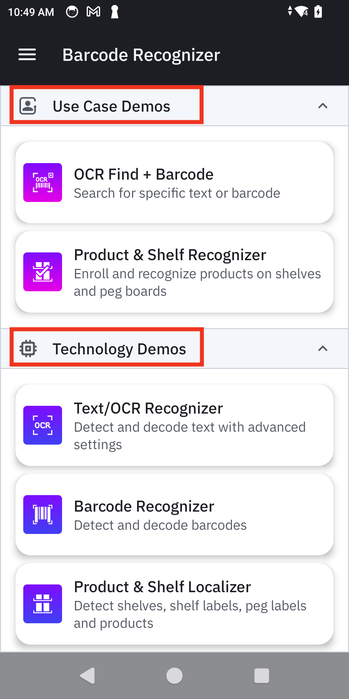 |
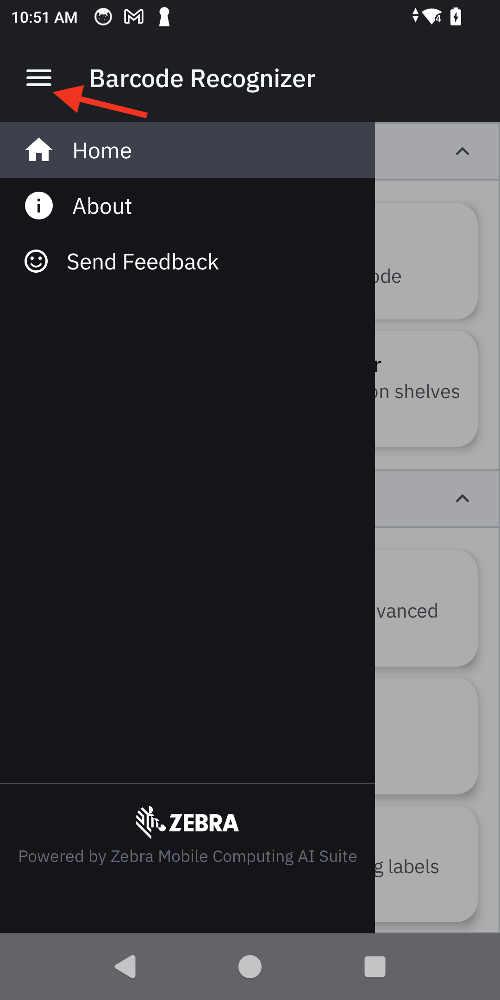 |
| Main screen | Options menu |
Settings
Before starting any demo, fine-tune its performance and accuracy by tapping the settings icon typically located in the top-right corner of a demo's configuration screen.
Common settings that can be adjusted:
| Setting | Description |
|---|---|
| Model Input Size | Determines the size of the image the AI model will analyze. |
| Resolution | Sets the resolution of the device's camera. |
| Inference (Processor) Type | Chooses which processor to use for AI tasks. Default is set to Auto-select which allows the system will choose the most efficient processor available. |
| Symbologies | Enables or disables barcode symbologies. Disabling unneeded symbologies dramatically improves detection speed and conserves battery life. Note: This setting is only available in "OCR Find+Barcode" and "Barcode Recognizer" demos. |
Tools
When starting a scan in any demo, the live camera view provides several tools to help capture data effectively.
| Tool | Description | Icon |
|---|---|---|
| Flash | Tap the flash icon to toggle the device's LED flash on and off. | |
| Zoom | Methods available: • Pinch to Zoom: Use two fingers and simultaneously push inwards or outwards to zoom in our out • Press the Zoom button |
OCR & Barcode Find
The OCR & Barcode Find demo showcases a combination of Optical Character Recognition (OCR) and barcode scanning to find specific information.
Configuration
Main screen controls:
- Capture Mode: Select the method for decoding text:
- Image Capture: Capture a static image and and analyze the single frame for text.
- Live Video: Continuously analyzes the live video feed and overlays decoded text in real-time.
- Toggle: Enable or disable the model for data to capture:
- Barcode
- OCR (text)
- Settings: Configure settings by tapping on the gear icon in the top right.
- Restore to Default Settings: Resets all settings and filters to their original state.
- Start Scan: Begins the scan session.
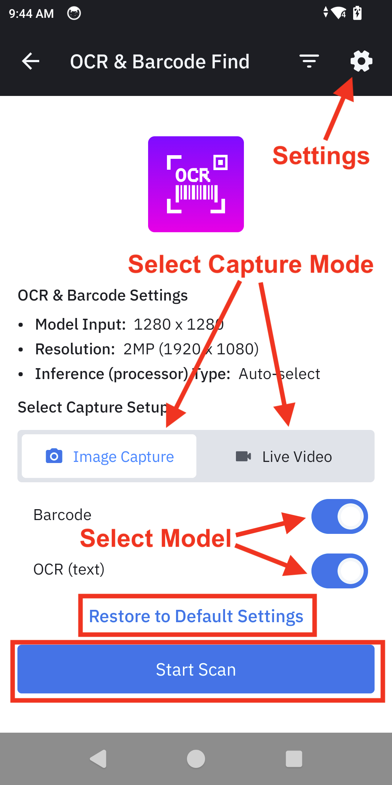
OCR & Barcode Find main screen guide
Demo Use
| Step | Instructions | Screen Capture |
|---|---|---|
| 1. Begin Scan | From the Demo Home screen, select either Image Capture or Live Video, then tap Start Scan to begin. | |
| 2. Data Capture | 2a. Image Capture: Point the camera at the target text and/or barcodes. Tap the shutter button to capture an image. The app analyzes the image and displays the results. | 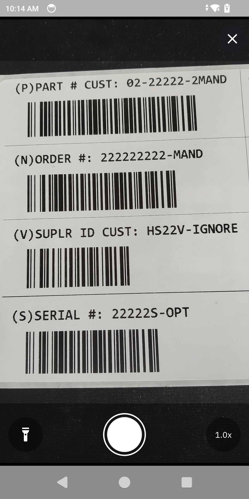 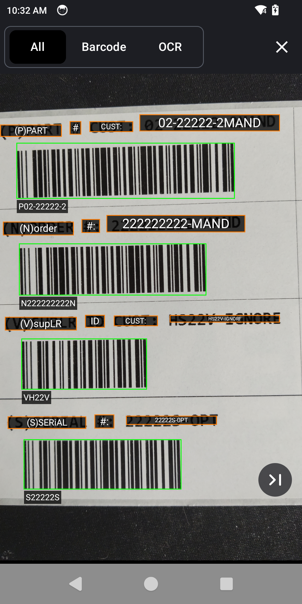 |
| 2b. Live Video: Point the camera at the target text and/or barcodes. The app highlights all recognized data in real-time on the live video feed. | 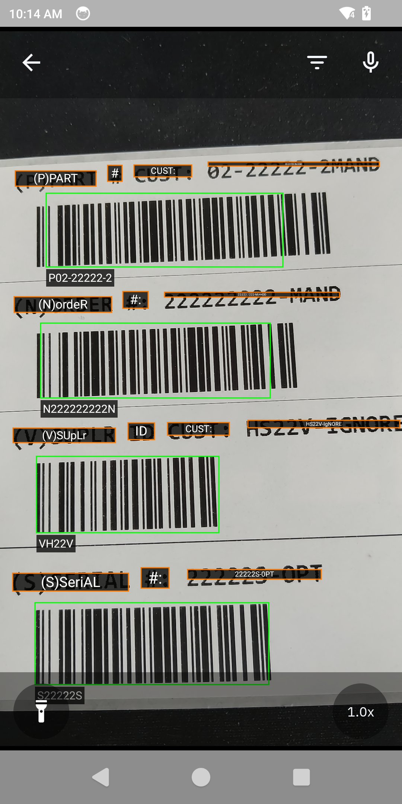 |
|
| 3. Filter | Tap the filter icon at the top of the screen (next to the microphone icon) to apply filters for specific criteria. This can be done before or during a live session. Choose one of two filters: Filter OCR or Filter Barcode. 3a. Filter OCR:
|
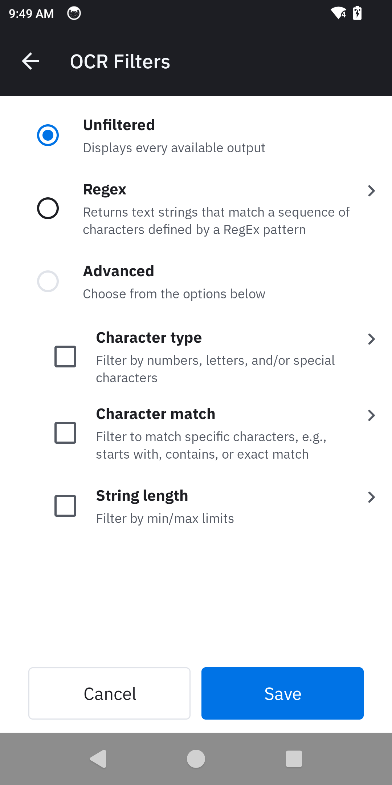 |
3b. Filter Barcode:
|
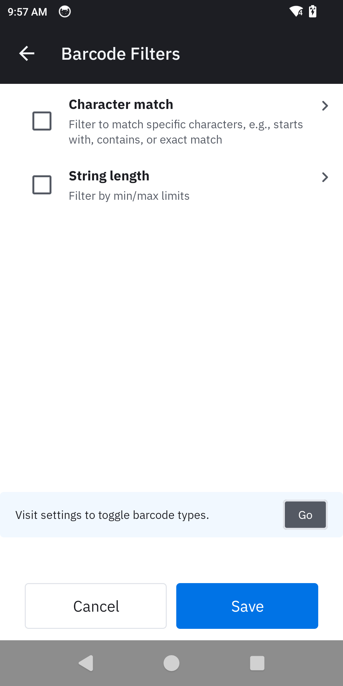 |
|
| 4. Active Filters | A red dot on the filter icon indicates an active filter. 4a. Image Capture: The results screen displays only the data that matches the current filters. UI Controls:
|
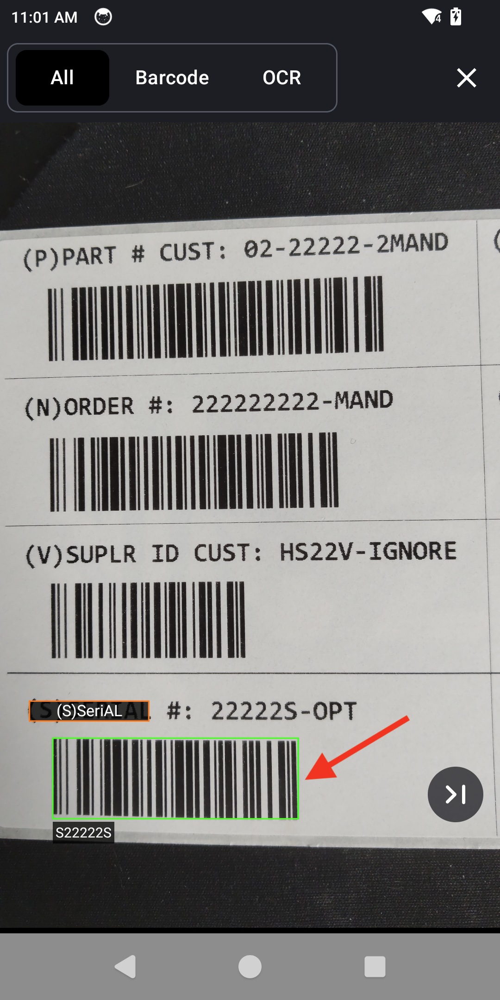 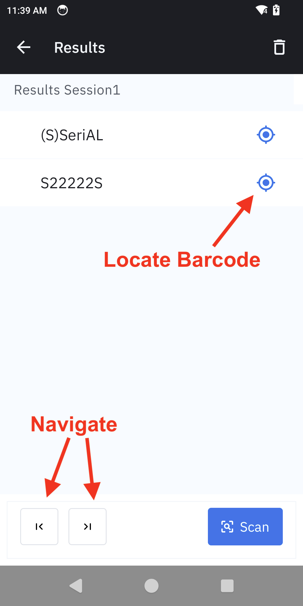 |
| 4b. Live Video: The live viewfinder highlights only the OCR data and/or barcodes that match the filter rules. A green checkmark indicates a successful OCR match, and the device provides an alert via beep and haptic feedback. | 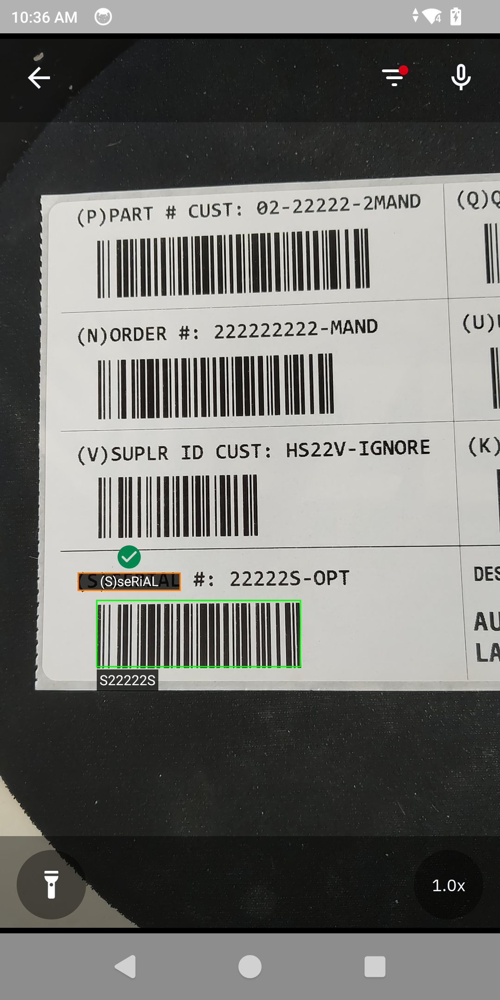 |
Product & Shelf Recognizer
The Product & Shelf Recognizer demo showcases the ability to enroll retail products on a shelf and have them recognized with an assigned unique identifier.
Configuration
Prerequisite: Ensure that the products being enrolled are cans, bottles, boxes, or packaged goods on a retail shelf with price labels. If the environment does not have a retail shelf, a printed copy of a retail shelf with such products can be used.
Main screen controls:
- Settings: Configure setting by tapping on the gear icon in the top right.
- Clear Active Database: Accessible from the Settings screen, ensures that the app recognizes the new products being enrolled. Previously, enrolled products were removed and no longer recognized.
- Restore to Default Settings: Resets all settings and filters to their original state.
- Start Scan: Begins the scan session.
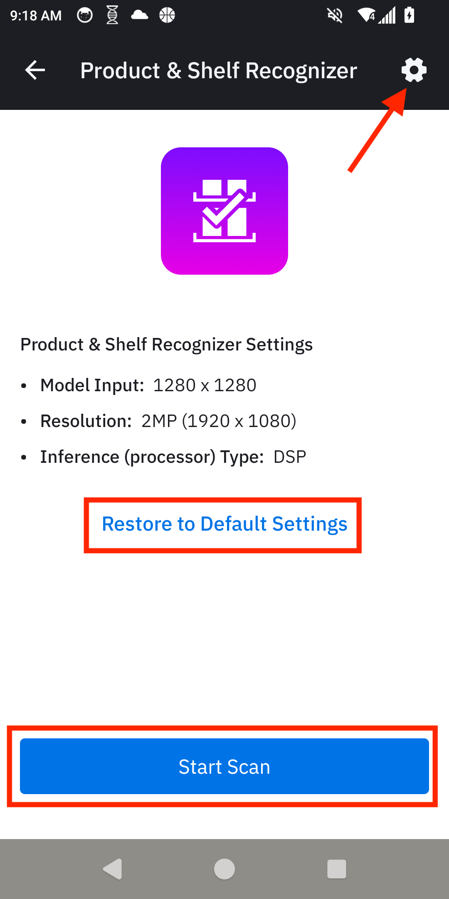
Product & Shelf Recognizer main screen guide
Demo Use
| Step | Instructions | Screen Capture |
|---|---|---|
| 1. Begin Scan | From the Demo Home screen, tap Start Scan to begin the session. | 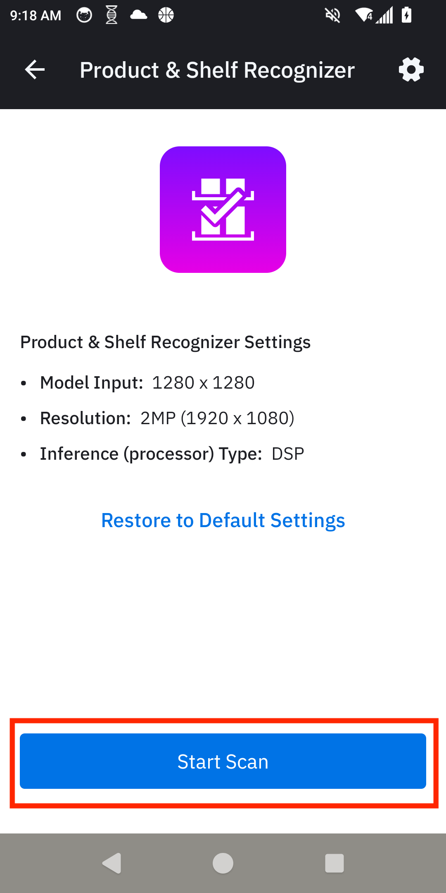 |
| 2. Capture Shelf to Enroll Products | Point the camera at a shelf containing the products to be enrolled and recognized. A printed picture with large, clear product images can be used as an alternative to a physical shelf.
|
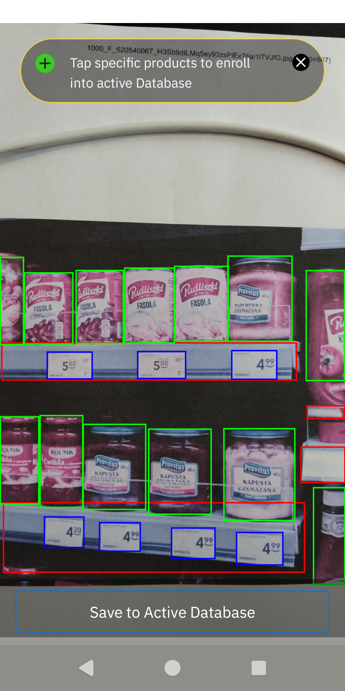 |
| 3. Enroll Products for Recognition | The captured shelf image is displayed, allowing for product selection. To enroll a product for future recognition, tap its image. When prompted, provide a unique SKU by either scanning a barcode or entering it manually. After the SKU is applied, the app returns to the shelf image. Continue this process for all products to be enrolled. Once finished, tap Save to Active Database to finalize the enrollment. This process can be repeated at any time to add more products. |
|
| 4. Recognize Enrolled Products | After saving the database, the live camera view launches automatically. The app can now recognize any enrolled product in the camera's view. A solid green bounding box appears around each recognized product, displaying its associated SKU. If multiple instances of the same product are visible, each is marked individually. |
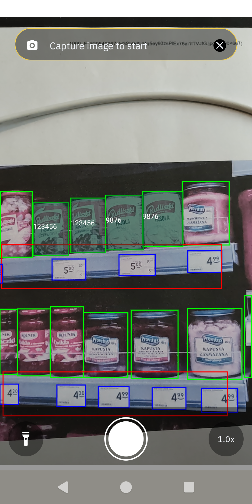 |
Text/OCR Recognizer
The Text/OCR Recognizer allows for detailed configuration of the text recognition engine. In addition to general settings, it offers advanced options for fine-tuning performance.
Configuration
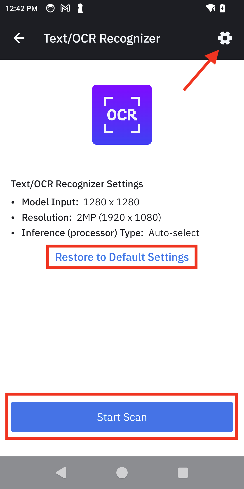
Text/OCR Recognizer main screen guide
Main screen controls:
- Restore to Default Settings: Resets all settings and filters to their original state.
- Start Scan: Begins the scan session.
- Settings: Configure setting by tapping on the gear icon in the top right.
- General Settings: Adjust the Model Input Size, Resolution, and Inference Type as described in the Settings section.
- Advanced OCR Settings: Adjust Detection, Recognition, and Grouping Parameters to fine-tune the OCR engine. Expand each section to view its options. For more information, see Text OCR.
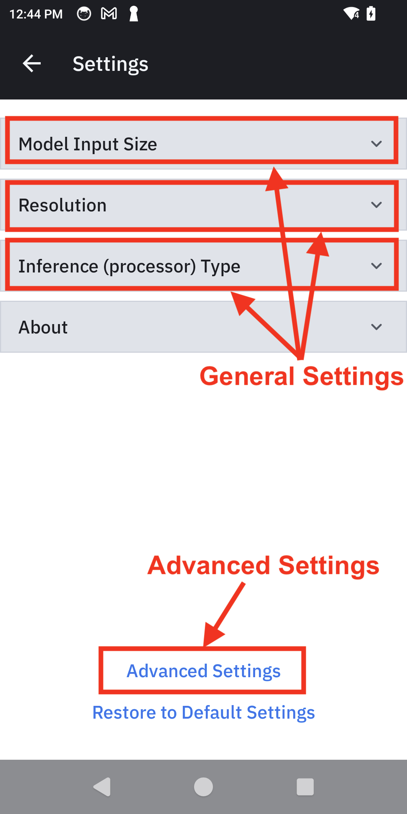
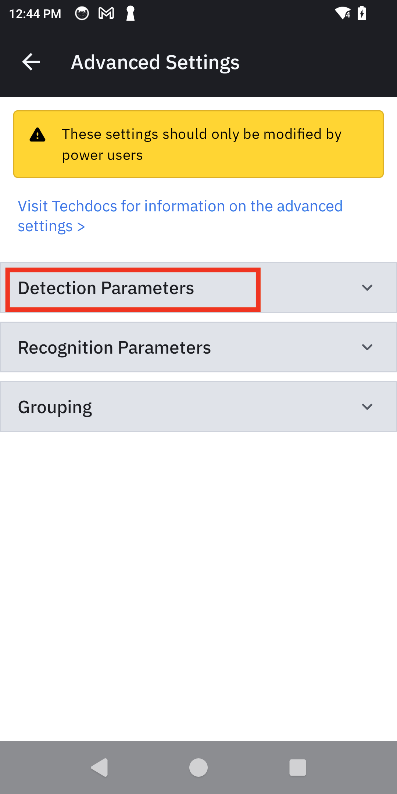
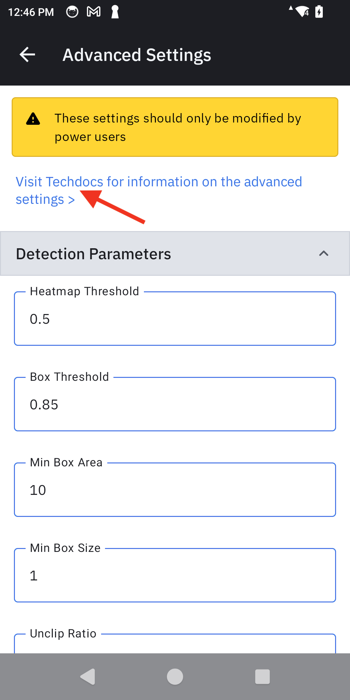
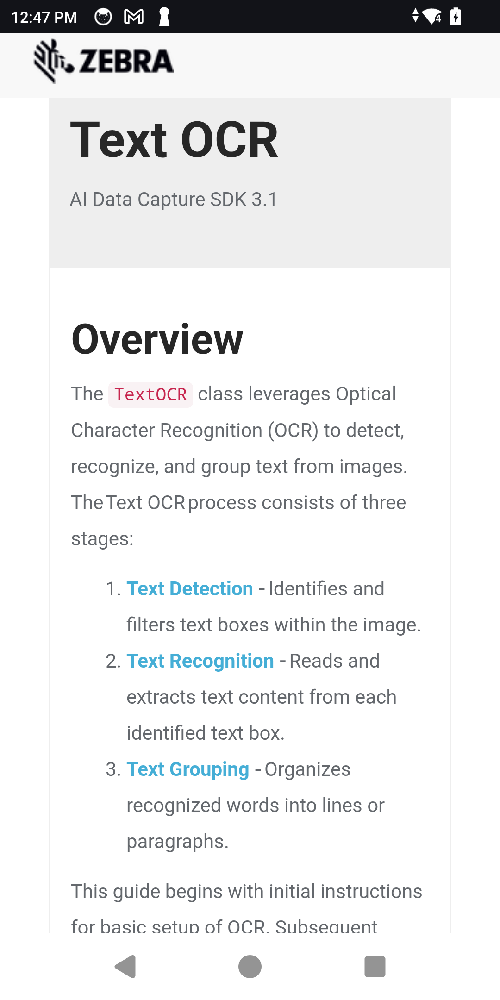
Example of settings navigation: Settings > Advanced Settings > Detection Parameters > View TechDocs
Demo Use
| Step | Instructions | Screen Capture |
|---|---|---|
| 1. Begin Scan | From the Demo Home screen, tap Start Scan to begin the session. | 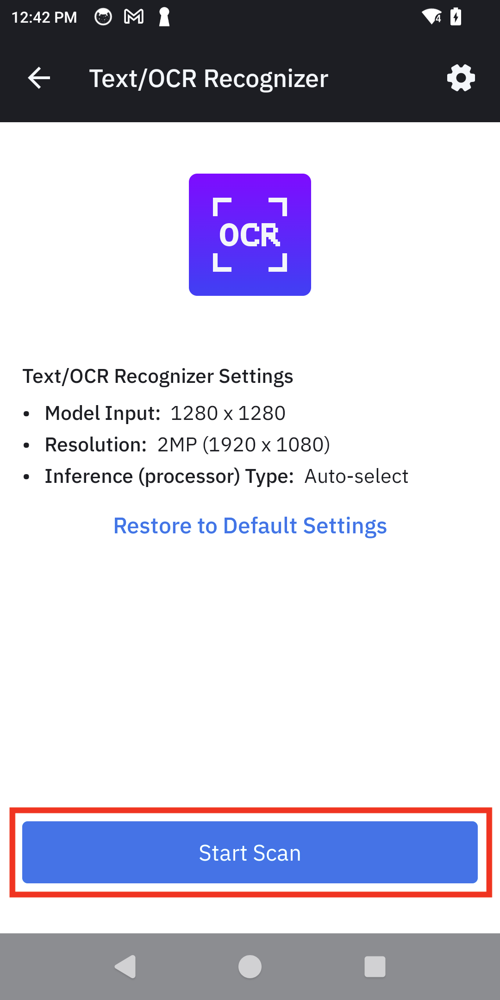 |
| 2. Live Scanning | Point the camera at anything containing a barcode. The app automatically highlights all decoded barcodes in real-time and displays the decoded text. | 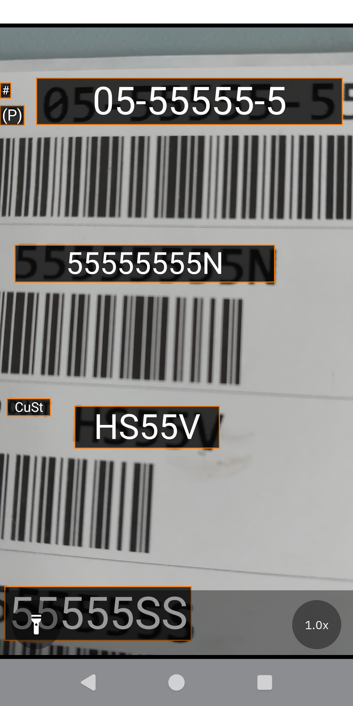 |
Barcode Recognizer
The Barcode Recognizer demo showcases the barcode localization model, allowing for the isolation and testing of its real-time detection capabilities.
Configuration
Main screen controls:
- Settings: Configure settings by tapping on the gear icon in the top right.
- Restore to Default Settings: Resets all settings and filters to their original state.
- Start Scan: Begins the scan session.
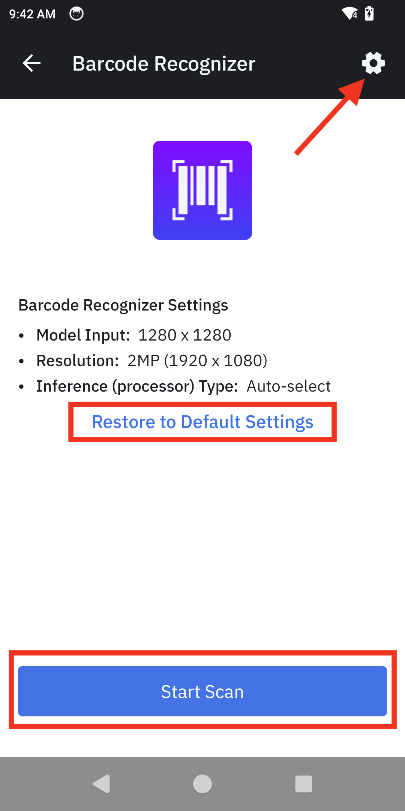
Barcode Recognizer main screen guide
Demo Use
| Step | Instructions | Screen Capture |
|---|---|---|
| 1. Begin Scan | From the Demo Home screen, tap Start Scan to begin the session. | 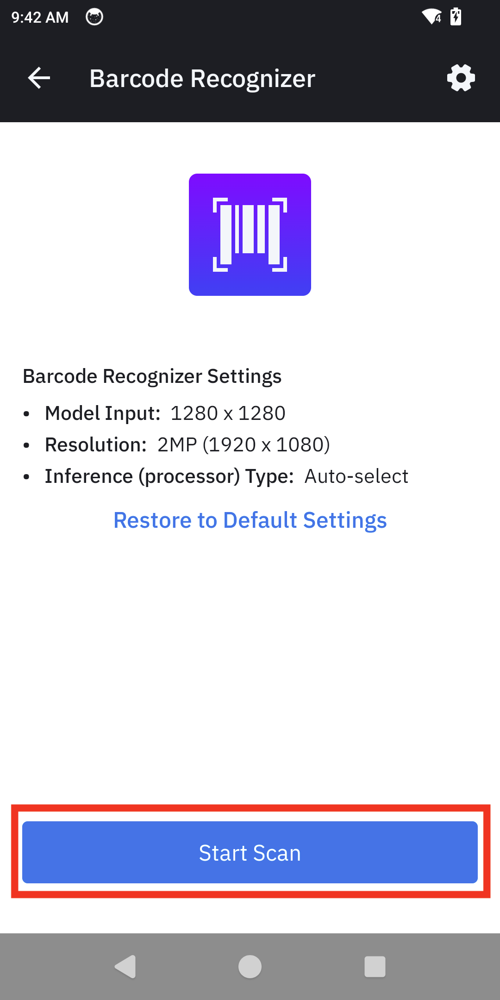 |
| 2. Live Scanning | Point the camera at anything containing a barcode. The app highlights all detected barcodes in real-time. | 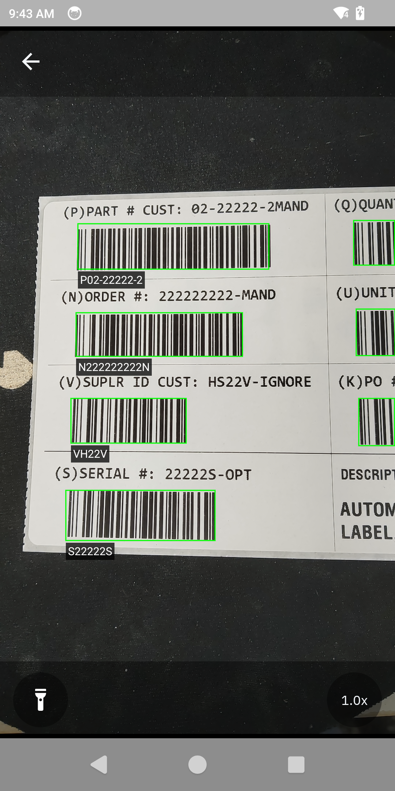 |
Product & Shelf Localizer
The Product & Shelf Localizer demo identifies aspects of a shelf including the shelf ledge, products, and shelf labels.
Configuration
Main screen controls:
- Settings: Configure setting by tapping on the gear icon in the top right.
- Restore to Default Settings: Resets all settings and filters to their original state.
- Start Scan: Begins the scan session.
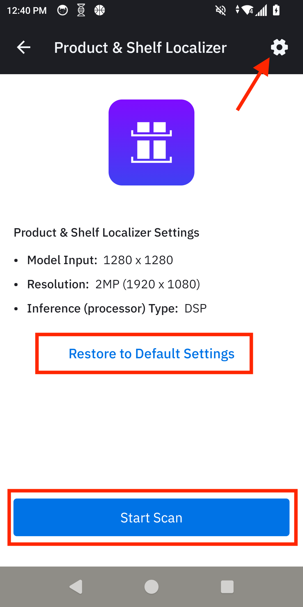
Product & Shelf Localizer main screen guide
Demo Use
| Step | Instructions | Screen Capture |
|---|---|---|
| 1. Begin Scan | From the Demo Home screen, tap Start Scan to begin the session. | 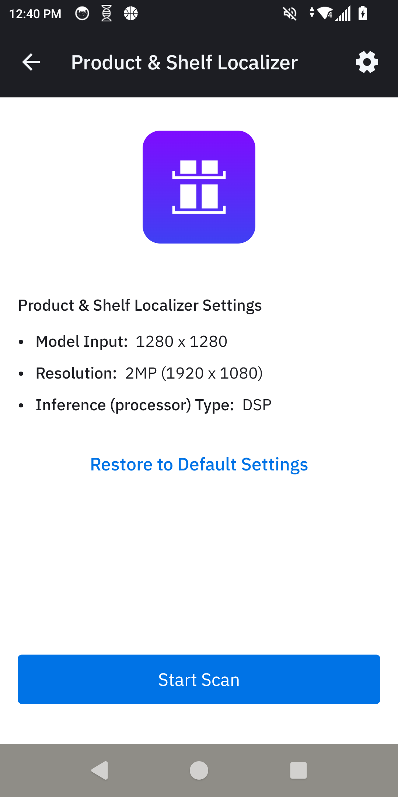 |
| 2. Product and Shelf Localization | Point the camera at the shelf containing the products to be localized. The application identifies key aspects of the shelf and the products as follows:
|
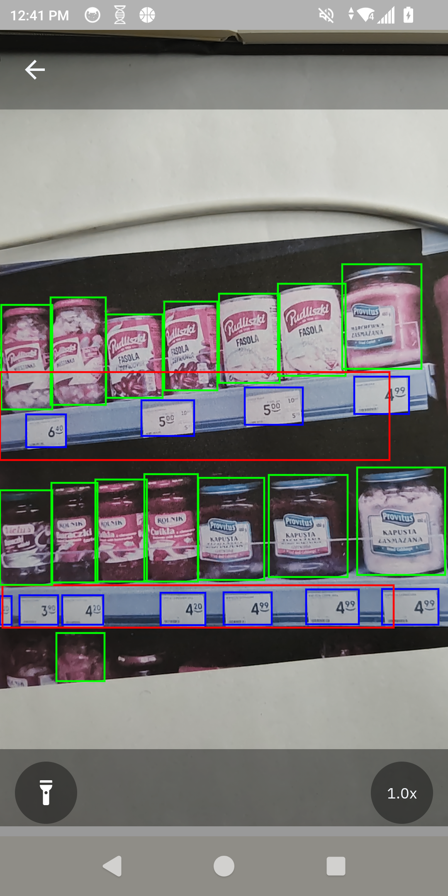 |
AI Barcode Finder Demo
The AI Barcode Finder demo application demonstrates how the AI Data Capture SDK can be used on Zebra Android™ devices to find specific barcodes using the camera. Assign custom actions to barcodes, such as flagging a product for pickup, recall, or quantity verification. The demo can be configured to work with any available barcodes.
Note: This guide is based on Showcase App v1.2.22. Install any pending updates for the AI Barcode Finder Demo from within the Showcase App.
Main Screen & Menu
When launching the app, the main screen displays two controls:
- Restore to Default Settings: Resets all configurations and settings to their original state.
- Start Scan: Begins the barcode scan session using the current configuration. Note: The demo app must first be configured in order to work properly.
Additional options are accessible by tapping the hamburger menu in the top-left corner:
- Home: Returns to the main screen.
- Configure Demo: Set up the scanning demo by adding barcodes and assigning actions.
- Settings: Customize advanced options for performance and feedback.
- About: Displays version information for the demo app and the underlying AI SDK.
- Send Feedback: Opens a feedback form for sharing experiences and suggestions.
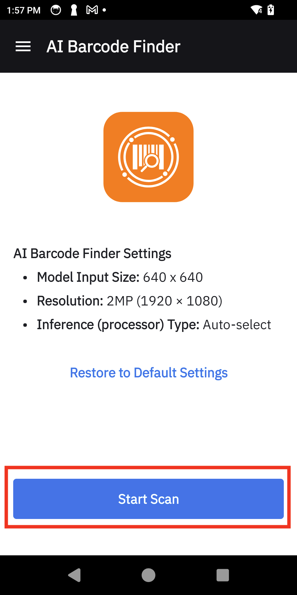 |
 |
| Main screen | Options menu |
Configure Demo
Before scanning, the app must be trained to recognize specific barcodes and assign a corresponding action to each one.
| Step | Instructions | Screen Capture |
|---|---|---|
| 1. Enter Configuration | From the Demo Home screen, tap the menu icon at the top left and select Configure Demo. | |
| 2. Select Barcode | With the camera activated, point to a barcode to add. The app automatically highlights any detected barcodes in green. Tap the desired barcode. | |
| 3. Assign Product & Action | In the dialog box that appears, set the following options and then tap Apply.
|
|
| 4. Action Complete | This process can be repeated to configure additional barcodes. When done, tap Apply on the "Current barcode configurations" screen to save and return to the home screen. | 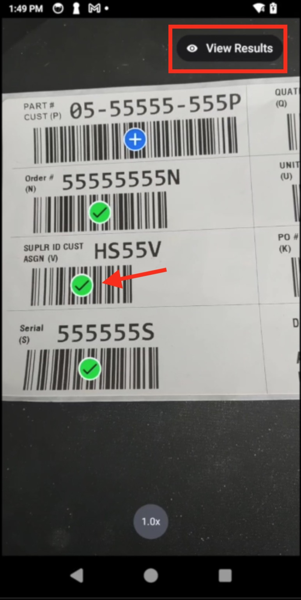 |
Settings
Fine-tune the application's performance and behavior.
| Setting | Description | Options |
|---|---|---|
| Model Input Size | Defines the resolution to which the image is resized to for AI analysis. Smaller sizes are processed faster but may reduce accuracy for small or distant barcodes. | • Small (640x640): Fastest performance, suitable for large or close-range barcodes. • Medium (1280x1280): A balance between speed and accuracy. • Large (1600x1600): Better for small, damaged, or distant barcodes, but slower performance. |
| Resolution | Sets the camera's capture resolution. Higher resolutions capture more detail but uses more power and memory. | 1MP to 8MP: Choose a resolution based on barcode density and distance. Higher resolutions are recommended for tiny, faint, or distant barcodes. |
| Inference (Processor) Type | Chooses the processor used for AI tasks. The default Auto-select option allows the system to choose the most efficient processor available. | • Auto-select (default): The system automatically selects the optimal processor for the device model. • DSP (Digital Signal Processor): Offers the best choice for power and performance, if available. • GPU (Graphics Processing Unit): A good alternative if DSP is not available. • CPU (Central Processing Unit): A fallback option. |
| Symbologies | Select the specific types of barcodes for the app to recognize. To improve performance, enable only the required symbologies. | A list of barcode types (e.g., Aztec, QR Code, Code 128) with an on/off toggle for each. |
| Feedback | Customizes the audio and haptic notifications that occur upon successful barcode scan. | Audio: • Enable (default): A sound is played after a successful scan. • Disable Haptics: • Enable (default): The device vibrates after a successful scan. • Disable Show all detected barcodes: • Enable (default): Highlights detected barcodes which have not yet been decoded. This applies only to barcodes that have been enabled under Barcode Symbologies. • Disable |
| Capture Mode | Turbo Mode | • Enable (default): Delivers the fastest inference performance for short periods, ideal for quick scans or rapid detection. It trades higher power usage for speed. • Disable |
Demo Use
| Step | Instructions | Screen Capture | ||||||||||
|---|---|---|---|---|---|---|---|---|---|---|---|---|
| 1. Begin Scan | From the Demo Home screen, tap Start Scan to begin the session. | |||||||||||
| 2. Detect Barcodes & Show Action Icon | Point the camera at a scene. The app highlights all recognized barcodes and overlays an icon indicating its assigned action or status.
Icon Legend:
|
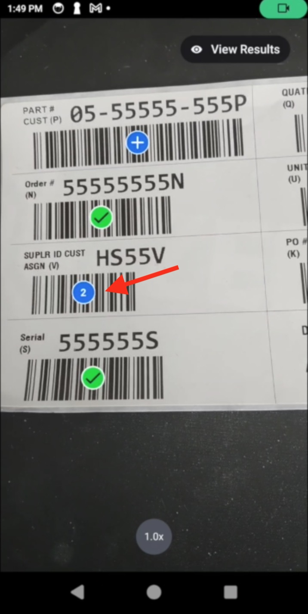 |
||||||||||
| 3. Perform an Action | Perform the action prompted and tap Confirm. | 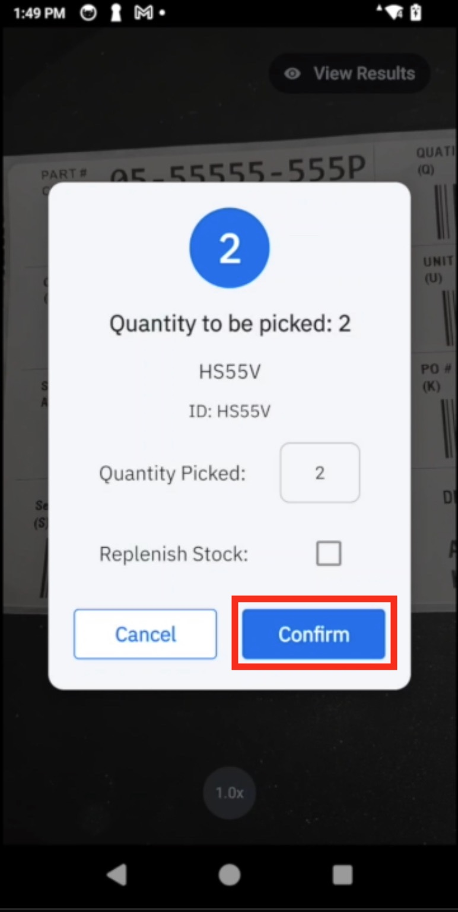 |
||||||||||
| 4. Action Complete | After confirming, the barcode's icon changes to a checkmark to indicate completion. Repeat this process for any other barcodes that require action. When all tasks are finished, tap View Results. | |||||||||||
| 4. View Results | Review the summary of all confirmed actions. This list can be cleared at any time. | 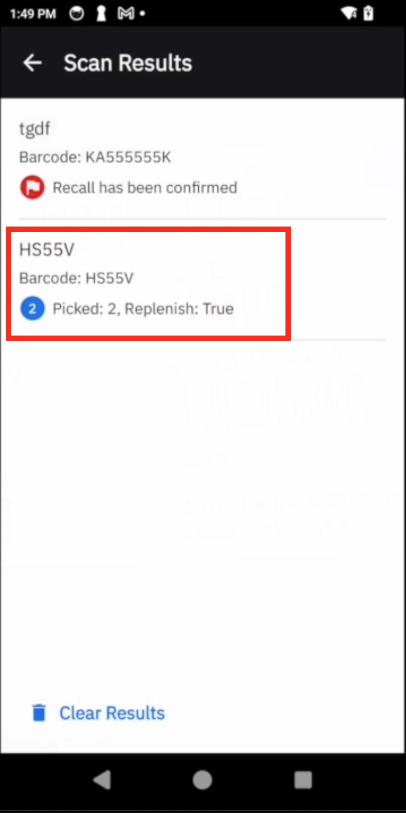 |